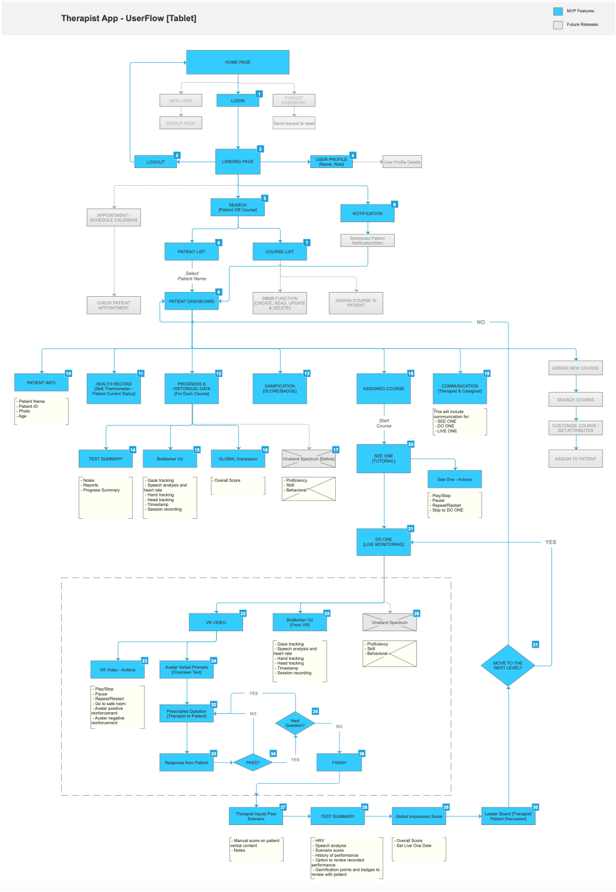
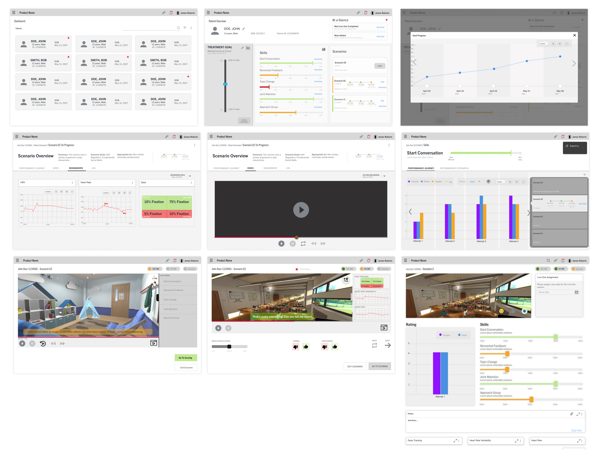
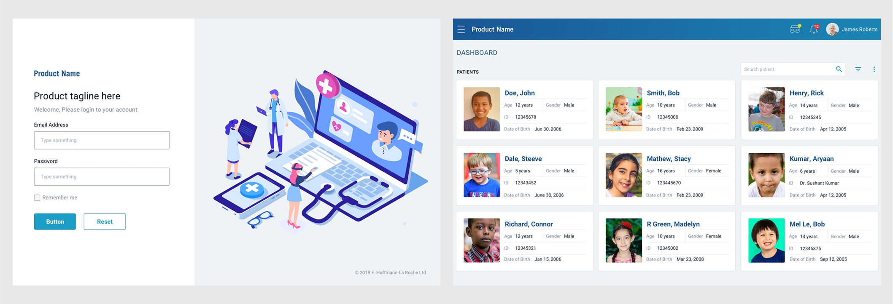
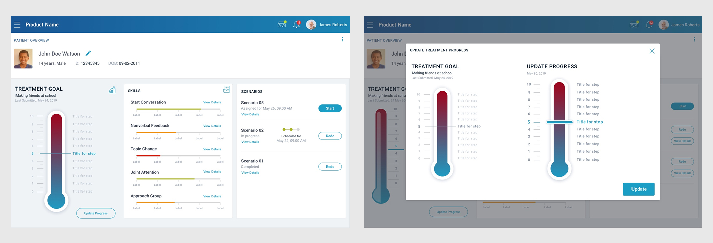
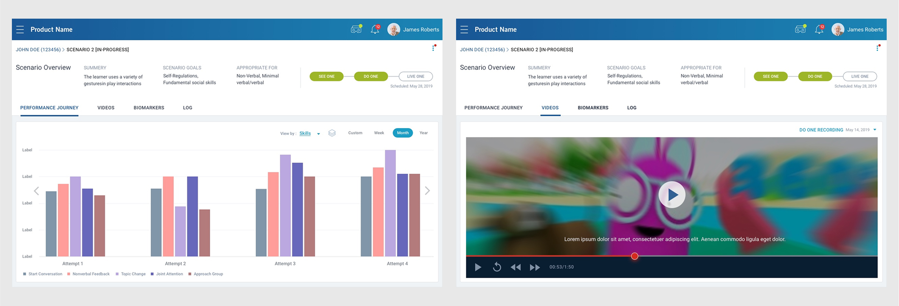
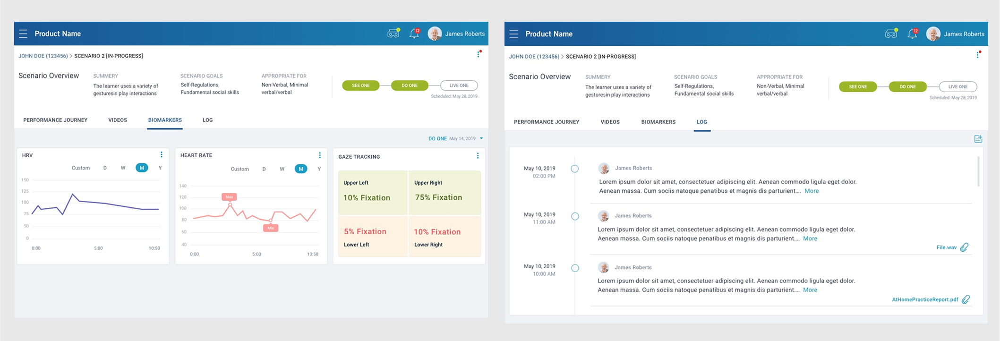
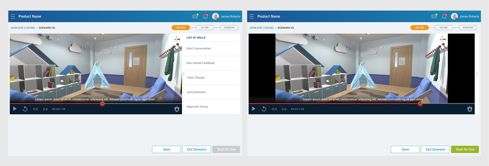
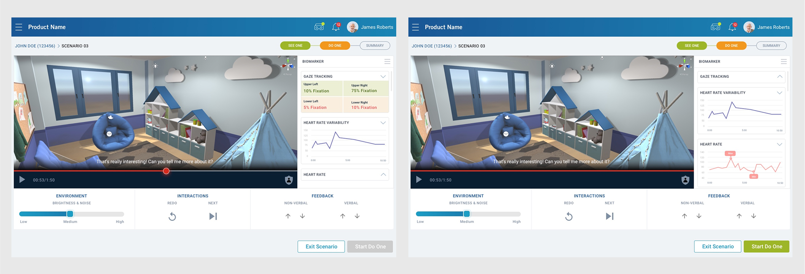
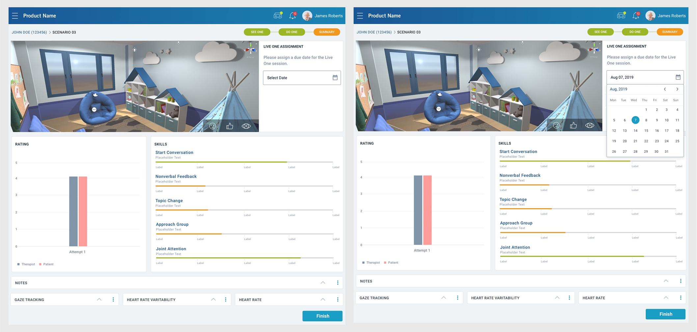

Contact
Let's work together
For new opportunities and collaborations. Feel free to reach out or just want to connect.
An application aimed at assisting therapists in treating children with autism
The following case study outlines the design and development of an application aimed at assisting therapists in treating children with autism. The app allows therapists to monitor a child's progress as they complete tasks designed to improve brain development and function. App enable therapists to closely examine a child's behavior and responses during specific stimuli and activities within a VR or natural environment.
My Role: I was part of the project as a Lead product designer and was responsible for UX/UI Design.
Collaboration: Business Stakeholder, Project Manager, Team Lead, and Dev team.
Tools: Sketch, Jira, MS Teams

This application is primarily designed for therapists who specialize in working with children with autism. These therapists require tools that provide them with comprehensive data and control over the therapeutic process to effectively monitor progress and adjust treatment plans. We collaborated closely with the therapist to identify pain points and expectations. We deep dived into deeper understanding of the application, usage and users.
They need to moniter data for progress and adjust treatment plans.
They will use to moniter and update data while working in home enviornment.
Based on the information provided by the therapist and stakeholders, therapists face several pain points in traditional therapy sessions, which this app aims to address:
To understand more about features and important aspect of the treatment, we started on benchmark study to gain more knowledge. We identified three imporant aspects of treatment therapist heavily rely on.
During our research we identify several opportunities to enhance autism therapy and address the identified pain points:
Based on our research findings, we started on the ideation to Feature MVP, IA, wireframes and visual design. We iteratively refined these designs through multiple feedback sessions with stakeholders and users.
We started with a strong focus on addressing the pain points identified through user research, incorporating features such as:
We started working on MVP and future features to be integrated. These features were discussed with stakeholders to agree and get confirmation. Sharing this early structure with users helped us validate how they expected to navigate the system—ensuring we were on the right track before moving into detailed design.

Project was focused on getting MVP designed and developed first. The wireframing and visual design were heavily influenced by user feedback, with iterative design and constructive feedbacks though click-through prototype helped us in ensuring the product meets the needs and expectations of the target users. The focus was on creating an intuitive, efficient, and visually appealing interface that supports seamless workflows.

Dashboards are complex with the ability to change/adjust nearly every aspect of the experience. We kept dashboard simple to have basic detail about patient and way to search or filter records.

An overview of patient progress about treatment goal, skills summary, upcoming course assigned and ability to update the progress.



Therapist can observe or monitor how patient is performing on particular given task specifically on Gaze tracking. Therapist has ability to increase or decrease the speed, change, stop, play/pause or repeat video.

Therapist can observe or monitor how patient is performing on particular given task specifically on Speech Modulation. Therapist has ability to increase or decrease the speed, change, stop, play/pause or repeat video.

Therapist can view summary of course scenario and add notes. Summary consist of assigning a new date for scenario, progress so far and vital information.

By addressing these pain points and leveraging the opportunities presented by VR technology, this application has the potential to significantly improve the effectiveness and efficiency of autism therapy.
For new opportunities and collaborations. Feel free to reach out or just want to connect.